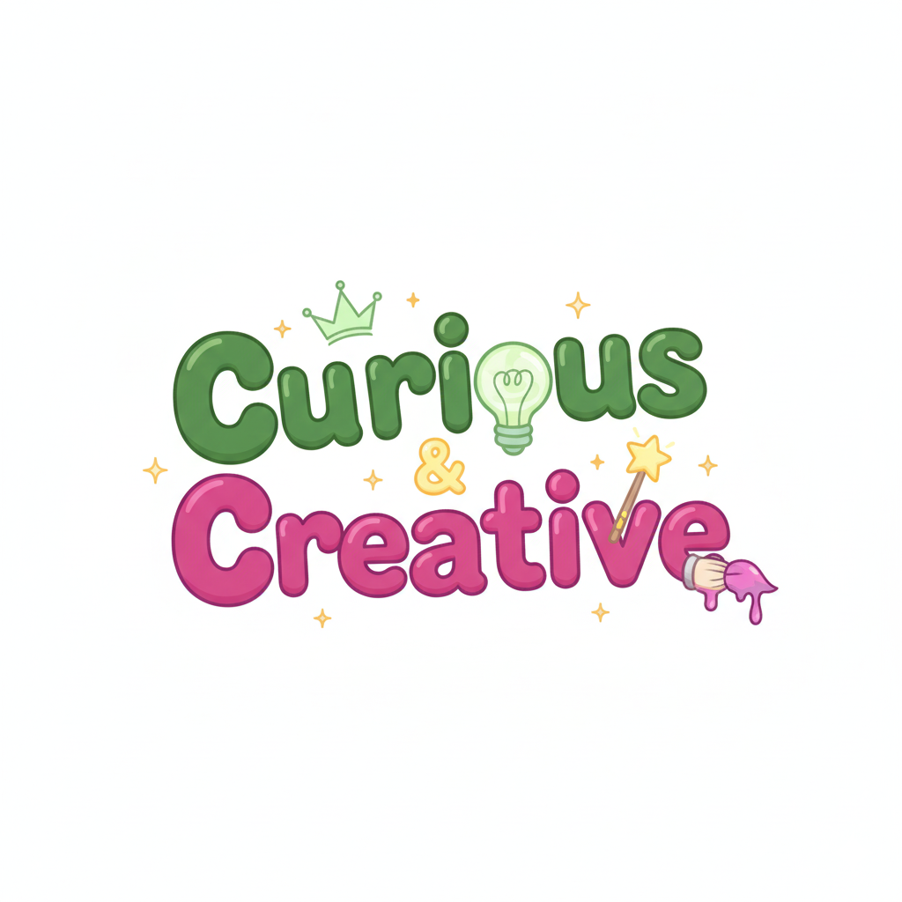

A deep dive into the minds of artists, creators, and innovators. Exploring the intersection of curiosity and creativity that drives meaningful work — and the stories behind the people who make it.
Deep conversations about how artists and creators bring their visions to life.
Exploring where great ideas come from and how they evolve into meaningful work.
The messy, beautiful journey of turning curiosity into creative breakthroughs.